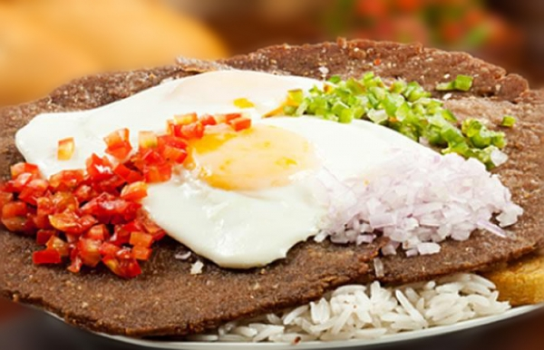
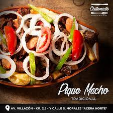

Cochabamba
El Sillpancho es una deliciosa preparación que consiste en un filete de carne empanizado, acompañado de arroz, papa cocida, huevo frito y una ensalada fresca. Este plato se ha convertido en un clásico de la cocina cochabambina, ofreciendo una combinación única de sabores y texturas. Le dejamos unos lugares recomendados para que pueda disfrutar este delicioso plato.
Oreja de Elefante
La Casa del Silpancho

El Pique Macho, un plato generoso que mezcla carne de res, salchichas, papas fritas, huevo, tomate y cebolla, todo bañado en una sabrosa salsa picante. Este festín culinario es conocido por su contundencia y sabor, satisfaciendo los paladares más exigentes.
Chillamicito
Heladeria Globos
Casa de Campo
Además, los Anticuchos, brochetas de carne de res marinadas y asadas, son una delicia que se disfruta con su deliciosa salsa de mani.